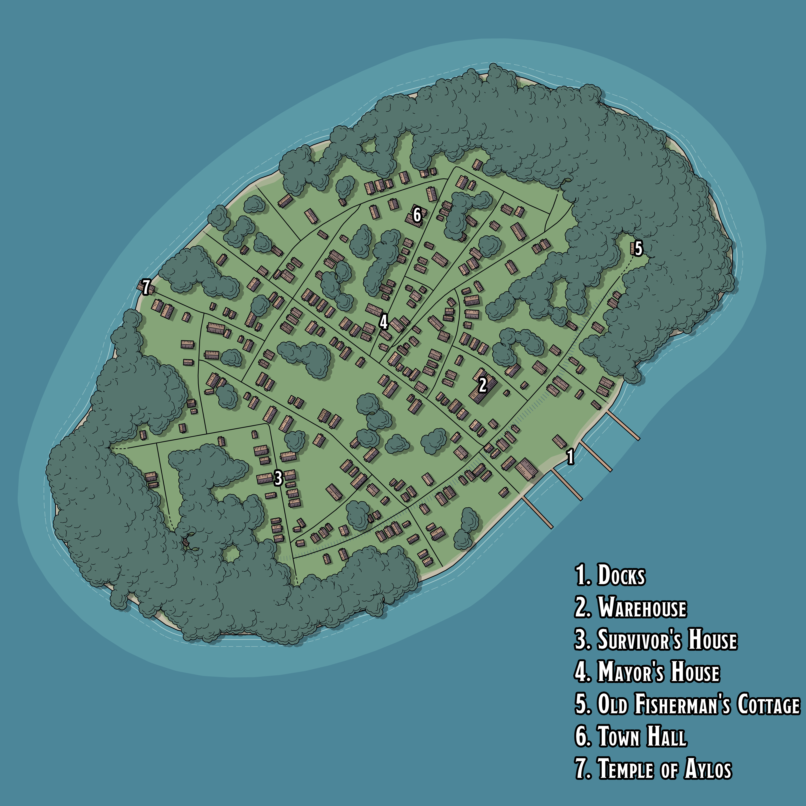
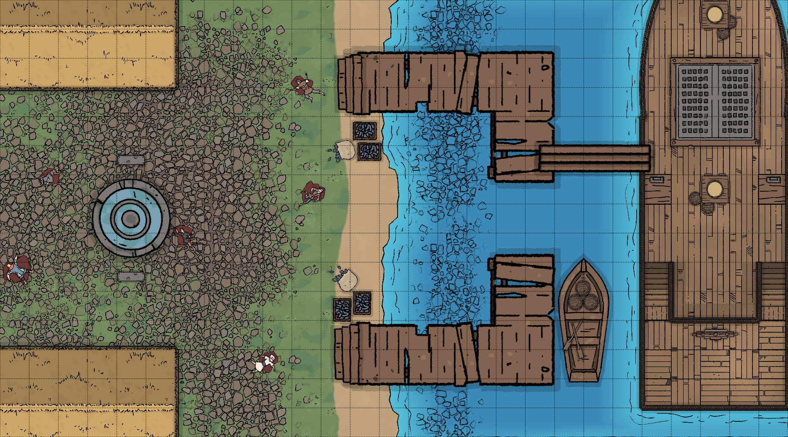
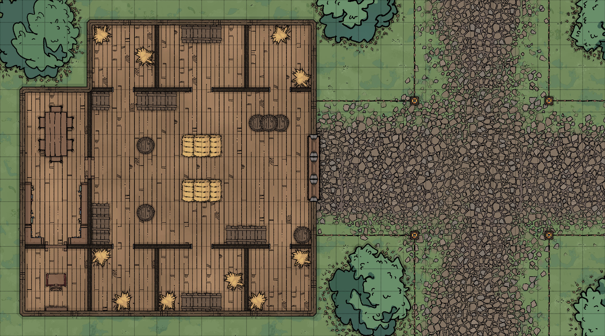
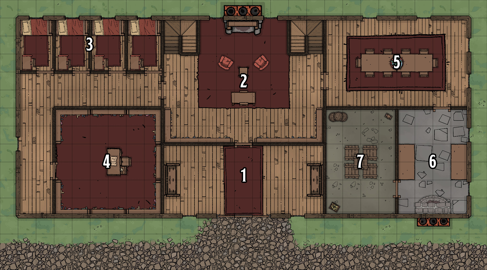
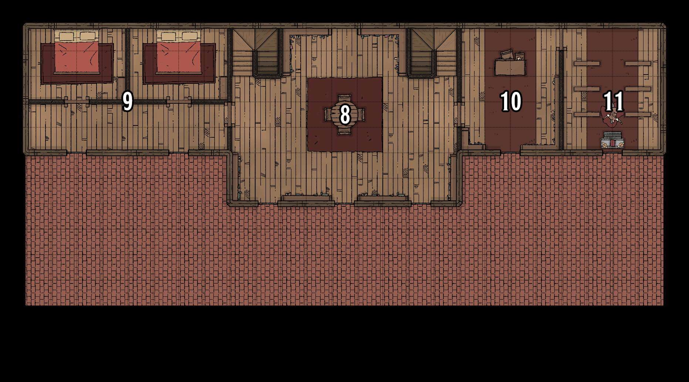
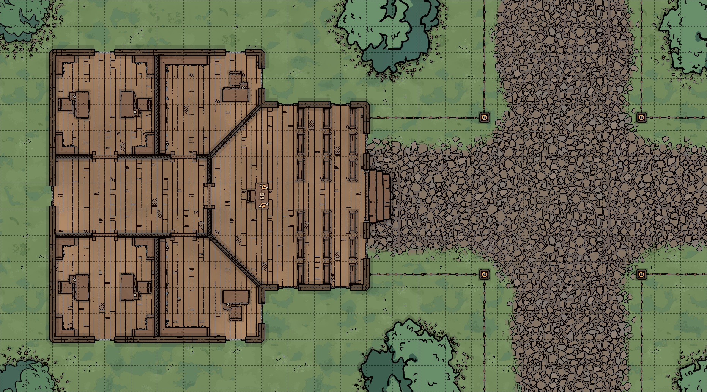

Porto Gallo
Dopo una notte di sonno irregolare, salite sul ponte della nave proprio mentre il sole si alza dall'orizzonte. In lontananza, riuscite a vedere il molo di Porto Gallo. Dopo alcune ore, la nave arriva e getta la scaletta per farvi scendere. Vi ritrovate di fronte la città, apparentemente abbandonata.
Quando la voce dell'Abisso ordinò a un sesto della popolazione di seguirlo, questi iniziarono una tremenda trasformazione. Si strapparono la carne dalle ossa e gli crebbe della pelle in sfumature di blu e verde e coperta di scaglie. I sopravvissuti alla trasformazione si tuffarono in mare, i rimanenti divennero dei "bastardi" mostruosi che si sono lanciati contro i restanti abitanti dell'isola, massacrandoli per la loro carne. Tra i sopravvissuti, alcuni hanno cercato di fuggire via nave, ma sono stati uccisi dai mostri, altri si sono nascosti nelle proprie case. Pochi sono riusciti a sopravvivere fino all'arrivo dei personaggi.

Porto
Ad accogliervi ci sono i cadaveri degli abitanti dell'isola, sparpagliati in giro, con i loro corpi fatti a pezzi nelle pozzanghere del loro sangue rappreso.
Il porto è stato il luogo di un enorme massacro, in cui gli uomini pesce hanno ucciso tutti gli abitanti che hanno cercato di fuggire via nave. Alcuni di questi bastardi sono ancora lì nascosti, in attesa di carne fresca.
Incontro: sahuagin Sei mezzi-sahuagin circondano i giocatori appena scendono dalla nave, due da nord, due da est e due da ovest. Se feriti sotto 11 HP, tentano di fuggire.

Magazzino
Direttamente dietro il porto trovate un edificio grande, a due piani. Due enormi porte scorrevoli sono per ora chiuse, nascondendo l'interno, ma ci sono delle finestre sul secondo piano. Sull'esterno dell'edificio si possono notare dei graffi provocati da artigli, come se qualcuno avesse provato a squarciare il legno per entrare.
Questo magazzino era il principale luogo di stoccaggio per i beni importati ed esportati. Con la penuria dei pesci, l'edificio cadde in rovina, ma da quando il pescato tornò a essere buono, furono costruiti altri edifici perchè quello non era più considerato sicuro. Ora è infestato da ratti.
Incontro: ratti
Ci sono 10 ratti giganti nascosti tra le pile di grano dentro il magazzino. Nell'ufficio in basso a sinistra si trova il libro degli incantesimi di un mago che contiene: dancing lights, mending, fog cloud, gust of wind, misty step. C'è anche una caraffa di acqua infinita, con una piccola placca che dice "In caso di emergenza".

Casa dei Sopravvissuti
Tutte le strade su questa strada sembrano essere state saccheggiate. Le porte di legno si trovano in pezzi in mezzo alla strada, le finestre sono state rotte, ma una casa sembra essere ancora intatta. Le sue finestre sono state barricate e la porta rinforzata. Fuori, appoggiati alle pareti, si trovano i cadaveri di diversi uomini pesce.
Tormundo, uno degli abitanti della città, è riscito a barricarsi dentro casa sua al momento del disastro. Ora è trincerato lì e sta usando dei piccoli buchi per uccidere gli uomi pesce che si avvicinano troppo.
Quando i personaggi si avvicinano, devono dichiarare di essere amichevoli, altrimenti Tormundo cerca di colpirli con la sua lancia. I giocatori che si avvicinano troppo devono superare un tiro di salvezza su destrezza con CD 14 o prendere 1d6 di danno perforante.
Se invece i personaggi annunciano il loro arrivo, Tormundo inizia a fare conversazione. Ecco quello che sa:
- gli abitanti dell'isola si sono trasformati circa 2 settimane fa, è successo velocemente e senza preavviso
- gli isolani si sono strappati la pelle, rivelandone un'altra coperta di scaglie blu-verdastre
- molti non si sono trasformati completamente e sono diventati delle specie di bastardi estremamente violenti
- nel tempio di Aylos ce n'è uno gigante.
Casa del Sindaco
Su questa strada, una casa a due piani sovrasta tutte le altre. A poco a poco che vi avvicinate, riuscite a leggere una placca dorata con scritto "Sindaco"
Qui è dove viveva il sindaco fino a quando non è stato ucciso dagli uomini pesce nella sua cappella privata al primo piano. Ora, alcuni uomini pesce vagano tra i corridoi e il fantasma del sindaco infesta la stanza in cui è stato ucciso.
- Soffitti i soffitti sono fatti di legno e alti 3 metri.
- Pavimento e muri il pavimento è fatto di assi di legno, mentre i muri sono fatti di legno dipinto.
- Porte le porte sono fatte di solido legno di quercia e reinforzate in metallo. Sono tutte aperte, a meno che non siano chiuse.
- Luci la casa è illuminata dal sole che passa tra le finestre.
Primo Piano

1) Entrata
Entrambe le porte sono state sfondate verso l'interno.
2) Primo Salotto
Quattro sahuagin attaccano i giocatori, due da destra e due da sinistra, scappano se a meno di 11 HP.
3) Stanza degli Ospiti
Ci sono 50 monete d'oro, devono superare una prova di Investigare con CD 14.
4) Studio Principale
Sulla scrivania c'è un libro aperto, il diario del sindaco. Chiunque lo legga apprende che:
- la città stava soffrendo sei anni fa per la pessima qualità del pescato e per l'esodo delle persone verso la terraferma
- improvvisamente, è tutto cambiato in meglio, e sono tornati pesci e persone
- padre Pio ha fatto visita al sindaco e gli ha confidato che in 6 anni l'isola avrebbe dovuto pagare il prezzo del suo riscatto.
5) Sala da Pranzo
Distrutta dagli uomini pesce, piatti e posate sono sparpagliati a terra e i muri sono stati graffiati da artigli.
6) Cucina
La porta che si vede è barricata dal lato della cucina (possono aprirla facilmente), e si vede come del ghiaccio che arriva dall'interno.
7) Freezer
Questa stanza è gelida, riescono a vedere il loro respiro condensarsi.
Tesoro: vino costoso una bottiglia di vino elfico dal valore di 100 monete d'oro.
Incontro: Black Pudding.
Secondo Piano

8) Secondo Salotto
È visibile una traccia di sangue sul pavimento che porta verso destra. Al centro della stanza ci sono diversi cadaveri di uomini pesce.
9) Stanza da Letto
Sono in buono stato, nessuno ha cercato di nascondersi lì.
Tesoro: vestiti costosi dei vestiti molto adornati dal tessuto pregiato, si trovano negli armadi e nei cassetti, hanno un valore di 50 monete d'oro.
10) Studio
Questo era lo studio del sindaco, dove poteva svolgere le sue mansioni in privato. Qui continua la scia di sangue che partiva dal salotto e porta infine nella cappella privata.
Tesoro: libro raro chiunque ispezioni la scrivania e ha successo in una prova di Storia con CD 16 riconosce che uno dei libri aperti sulla scrivania vale 125 monete d'oro, se si trova il giusto compratore.
11) Cappella Privata
Questa stanza è un piccolo santuario dedicato alla dea del commercio Orlena. Il sindaco l'ha costruito quando la città si è ripresa dalla crisi, per ringraziarla del favore. Ora, il sindaco è sdraiato a terra, con la faccia sul pavimento, in una pozzanghera del suo stesso sangue, morto.
Incontro: fantasma il fantasma del sindaco si manifesta se il suo cadavere viene disturbato. È furioso, data la sua morte, ma si riesce a calmarlo con una prova di carisma con CD 12. Se si fallisce, il fantasma attacca e cerca di possedere uno dei giocatori.
La Casetta del Pescatore
Dalla strada principale si allunga un piccolo sentiero di terra battuta che porta su un altura dell'isola. Alla fine del sentiero c'è una piccola cabina in legno ricoperta di reti ed altra attrezzatura da pesca.
La cabina appartiene a Lupo di Mare (usa il blocco per i veterani), un pescatore locale molto famoso per quanto pesce cattura: anche durante la crisi, Lupo di Mare riusciva comunque a campare di pesca. Quando gli uomini pesce hanno attaccato la città, Lupo di mare comunque è riuscito a difendersi dai pochi che sono arrivati fino alla sua cabina. Quando i personaggi arrivano, lo trovano a combattere un'enorme aragosta (usa il blocco per il chuul)
Incontro: Lupo di Mare vs Aragosta è un combattimento all'ultimo sangue. Se i personaggi non aiutano Lupo di Mare, l'aragosta vince e poi combatte contro i giocatori. Lupo di Mare accoglie i giocatori, se sopravvive all'incontro, e li invita dentro casa per una cordiale tazza di tè.
- Lupo di mare sa che gli uomini pesce sono comparsi un paio di settimane fa
- Sa anche che ce n'è uno enorme che gira sull'isola, ma ora non ha idea di dove sia
Palazzo del Comune
Al centro di un incrocio ciottolato, c'è un grande edificio in legno in cui si entra con delle scale, anche esse in legno. Guardando attraverso le finestre, riuscite a vedere delle panchine e una piccola scrivania.
Questo edificio veniva usato per le udienze pubbliche, in cui i cittadini discutevano i problemi e le proposte per la città. Quando gli uomini pesce hanno attaccato, molti abitanti hanno provato a barricarsi qui dentro, solo per essere trascinati fuori da queste creature immonde. Ora, alcuni uomini pesce rimangono ancora dentro.
Incontro: Sahuagin ci sono 3 mezzi-sahuagin, due per ogni ufficio. A dispetto delle loro controparti purosangue, non hanno lance e hanno un punteggio di INT 8. Attaccano con gli artigli e con i morsi e se ridotti a meno di 11 HP tentano di fuggire.
